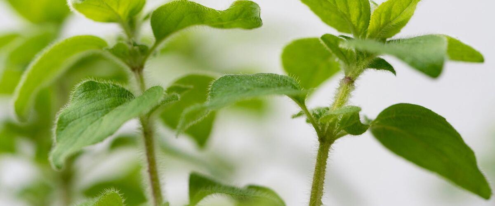

When to plant oregano in Friday Harbor and the San Juans, WA
Plant young oregano plants in Friday Harbor and the San Juans Mar 15 – May 10.
- Difficulty
- Easy
- Sun
- Full sun
- Spacing
- 12 to 18 inches apart
- Planting depth
- Plant at the depth it grew in the nursery pot
- Frost
- Handles light frost
- First harvest
- Pick lightly the first year, freely after that
Why these dates
Friday Harbor and the San Juans's typical last spring frost is March 26. As a cool-season crop that handles light frost, this crop doesn't need to wait for that date. In the west-side valleys, though, the soil usually isn't ready to work until about March 15.
West-side valleys. The Willamette Valley, Puget Sound and southern Oregon valleys. Long frost-free seasons, but soil stays cold and wet into May, so warm crops wait for warm soil, not just the last frost.
How to grow oregano in Friday Harbor and the San Juans
- Pick a sunny spot with soil that drains well, and mix in an inch or two of compost.
- Plant young oregano plants Mar 15 – May 10, 12 to 18 inches apart. Plant at the depth it grew in the nursery pot.
- Water sparingly once established. Rich soil makes the flavor milder, so skip the fertilizer.
- Harvest: Cut stems just before flowering, when flavor peaks. Dry bunches upside down in a shady, airy spot.
Key numbers
- 6.0–8.0Soil pH
- Rarely, if everFertilizer
- Just before floweringBest flavor
- Every 3–4 yearsDivide
Growing notes
What makes the difference in Northwest gardens, in plain language.
Lean soil, strong flavor
Oregano's flavor comes from aromatic oils in the leaves, and plants make the most of them in full sun and lean, well-drained soil. Rich soil, fertilizer and lots of water grow big, leafy plants with a milder taste. Once established, water only in long dry spells.
Like most Mediterranean herbs, it dislikes soggy winter soil, so give it a raised or well-drained spot west of the Cascades. It's hardy across the Northwest, though Greek oregano is a little less cold-tolerant in the harshest eastern winters.
Pick the right plant
The word oregano covers plants with very different flavors. Greek oregano has the strong, peppery taste most cooks want. Many seed packets labeled simply oregano grow a mild, ornamental type with little flavor. The safest approach is to buy a plant and rub a leaf before you buy: good culinary oregano should smell sharp and taste almost spicy.
Golden oregano is milder and grown mostly for its bright foliage.
Harvesting, drying and dividing
Cut stems just as flower buds form, when flavor peaks, and dry bunches upside down in a shady, airy spot. Unlike many herbs, dried oregano keeps much of its flavor. Cutting back by half in early summer gives a second flush of leaves for a later harvest.
After three or four years, clumps get woody in the middle. In spring, dig the clump, cut it into a few pieces with healthy roots and shoots, and replant the strongest ones.
Common questions
When is the last frost in Friday Harbor and the San Juans, WA?
Typically March 26. In 9 years out of 10, frost is over by April 21. These are 1991–2020 NOAA climate normals for Friday Harbor Airport.
Is it too late to plant oregano in Friday Harbor and the San Juans?
The spring planting window runs through May 10. Later plantings tend to struggle in summer heat.
How long until I can pick oregano?
Pick lightly the first year, freely after that. Cut stems just before flowering, when flavor peaks. Dry bunches upside down in a shady, airy spot.
Why does my oregano have no flavor?
Either it's a mild ornamental type, or it's growing in rich, damp soil or shade. Greek oregano in full sun and lean soil has the strongest taste. Harvest just before it flowers for the best flavor.
Is oregano the same as marjoram?
They're close relatives in the same plant group. Marjoram is sweeter and milder and less cold hardy, while oregano is more pungent and a tough perennial in most of the Northwest.
Should I let oregano flower?
For the best leaves, harvest before it flowers. But the flowers are a favorite of bees and other pollinators, so many gardeners let part of the plant bloom and cut the rest for the kitchen.
Also plant in Friday Harbor and the San Juans around the same time
Planting dates for oregano in nearby areas
- Bellingham, WA Mar 15 – May 10
- Mount Vernon and Burlington, WA Mar 15 – May 10
- Anacortes, WA Mar 15 – May 10
- Oak Harbor and Whidbey Island, WA Mar 15 – May 10
- Portland, OR Mar 15 – May 10
- Gresham, OR Mar 15 – May 10
Full planting calendar for Friday Harbor and the San Juans · Oregano in every city